Спроектировала end-to-end процесс, в котором школа отправляет запрос на согласие внутри Schooly, родитель подтверждает или отклоняет его в мобильном приложении, а результат автоматически синхронизируется с мероприятиями, участниками и данными школы.
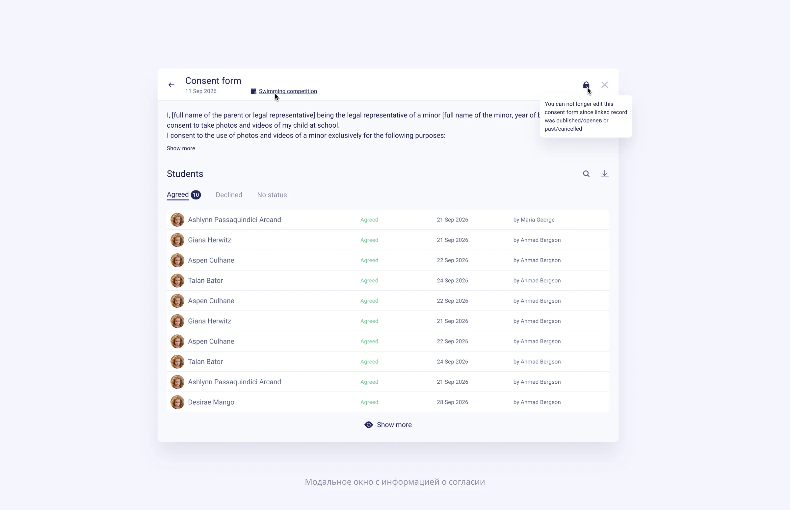
О продукте
Schooly — MIS-система для частных школ. Сотрудники управляют учениками, мероприятиями и административными процессами в веб-приложении, а родители взаимодействуют со школой через мобильное приложение.
Проблема
Для экскурсий, поездок и других мероприятий за пределами школы необходимо заранее получить и сохранить согласие родителей каждого участника.
До появления Consent Form этот процесс полностью зависел от офлайна. Самый надёжный вариант — пригласить родителя в школу и получить подпись лично. Но для этого сотруднику нужно связаться с родителем, договориться об удобном времени, а родителю — специально приехать в школу. Для занятых родителей и сотрудников даже одно согласие превращалось в отдельную организационную задачу.
Альтернатива — передать бланк через ребёнка — сокращала количество встреч, но добавляла новые риски. Ученик мог забыть отдать документ родителям, потерять его или не вернуть вовремя. Кроме того, школа не могла быть полностью уверена, что подпись на бумаге действительно поставил родитель.
Даже получение подписанного бланка не завершало процесс. Документы нужно было собрать, сохранить и не потерять, а сотрудникам — вручную отслеживать, от кого согласие уже получено, кого ещё нужно найти и кому напомнить.
В результате простое согласование участия превращалось в длинную цепочку ручных действий: найти родителя → передать документ → дождаться подписи → вернуть его в школу → проверить → сохранить → актуализировать список участников.
Чем больше учеников и мероприятий, тем больше времени школа тратила не на организацию самой поездки, а на обслуживание бумажного процесса вокруг неё.
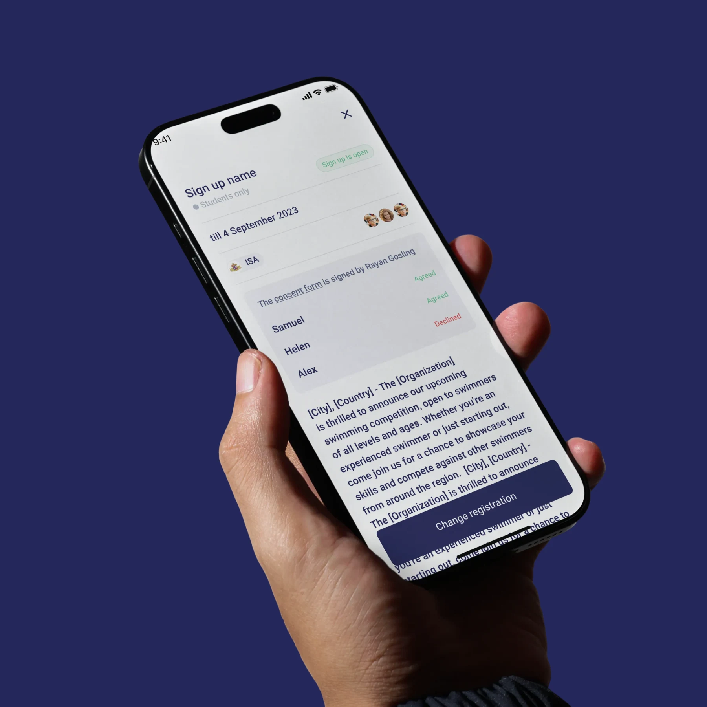
Задача
Перенести процесс получения родительского согласия в Schooly: дать школе возможность отправлять запросы в цифровом формате, родителям — отвечать непосредственно в мобильном приложении, а системе — автоматически фиксировать результат и учитывать его в связанных процессах.
В проекте я выступала UX/UI-дизайнером и вела задачу end-to-end: от исследования текущего процесса и проектирования сценариев до прототипов, финальных интерфейсов, состояний и передачи решения в разработку. Работала в связке с продакт-менеджером и лид-дизайнером, вместе проверяя продуктовую логику и ключевые дизайн-решения.
Влияние
Целью было не просто заменить бумажное согласие цифровой формой, а сократить весь цикл получения, обработки и хранения ответа родителя.
Скорость процесса Сократить время от отправки запроса до получения согласия и увеличить долю ответов, полученных до установленного срока.
Операционная эффективность Уменьшить количество ручных напоминаний, бумажных документов и времени сотрудников на сбор, проверку и поиск согласий.
Бизнес-ценность Снизить операционные затраты на сбор и обработку согласий: сотрудникам не нужно печатать и раздавать формы, вручную отслеживать ответы, напоминать родителям и хранить бумажные документы. Более быстрый и контролируемый сбор согласий также снижает риск срыва поездок и мероприятий из-за отсутствующих документов.
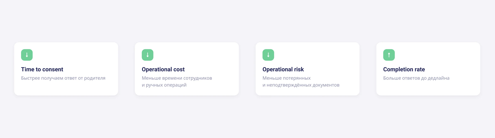
Сложность
На первый взгляд задача выглядела как простая форма с двумя действиями — подтвердить или отказаться.
Но Consent Form должна была встроиться сразу в несколько существующих сценариев Schooly.
На стороне школы согласия могли быть связаны с Event, Sign-up и Messages. Нужно было определить, как создавать и редактировать такую форму, как она будет вести себя при изменении связей между сущностями и где сотрудники смогут увидеть ответы родителей.
На стороне родителя изменения затрагивали уведомления, события, сообщения, навигацию и отдельный flow работы с формой.
Кроме того, Consent Form становилась новой сущностью внутри продукта: необходимо было определить её состояния, связь с учениками и мероприятиями и правила автоматического обновления участников после ответа родителя.
Поэтому основная сложность была не в экране подтверждения, а в том, чтобы встроить цифровое согласие в существующую архитектуру Schooly и синхронизировать действия двух сторон сервиса.
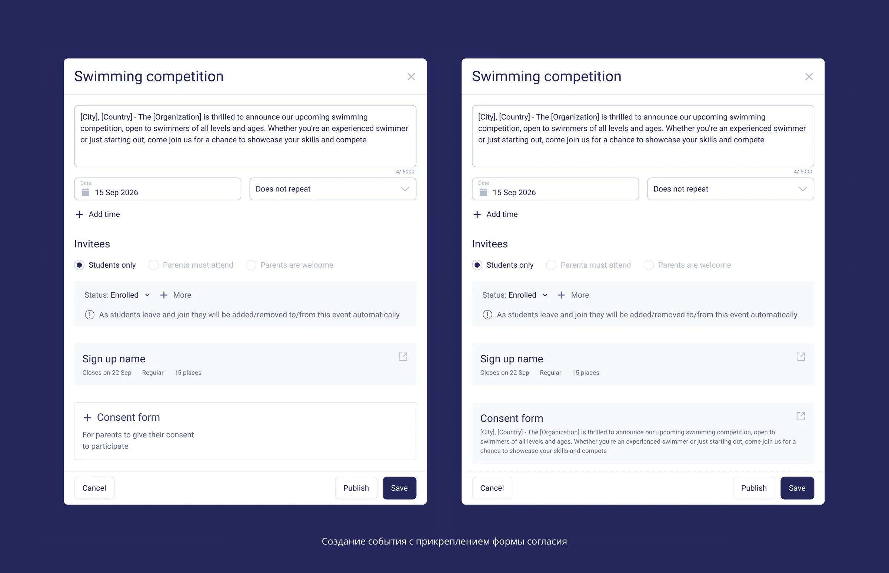
Правила
Перед детальной отрисовкой я разобрала исходные материалы, собрала черновой flow и подготовила вопросы для обсуждения с продакт-менеджером и лид-дизайнером.
На встрече мы прошли сценарий от создания запроса школой до ответа родителя и определили основные продуктовые правила.
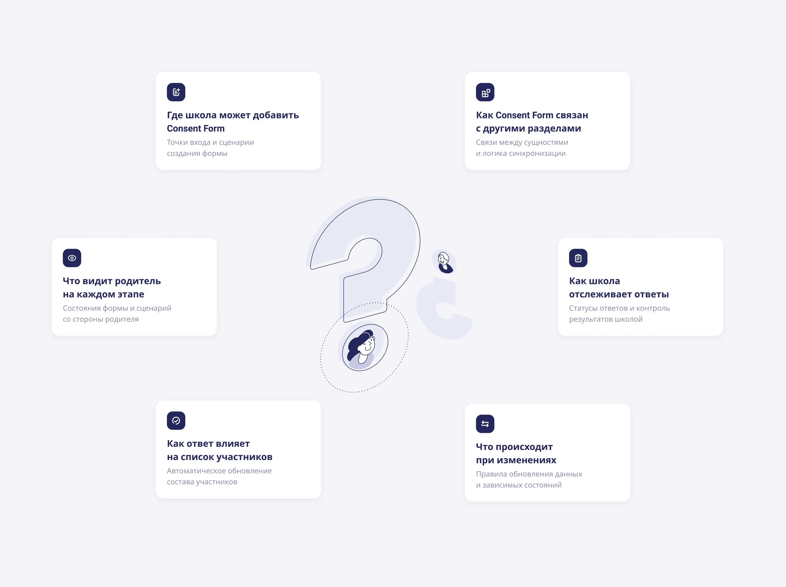
Исследования
Перед проектированием я посмотрела демо-версии продуктов-конкурентов и собрала UX-референсы из образовательных и смежных сервисов, чтобы понять, какие паттерны уже привычны пользователям и где у существующих решений есть ограничения.
Дополнительно изучила сценарии, в которых пользователю нужно принять осознанное решение: подтвердить участие, отказаться или согласиться с условиями. Для меня было важно не повторить визуальные решения, а разобраться в механике взаимодействия: как пользователь получает запрос, сколько контекста видит до принятия решения, где располагаются действия, как система подтверждает результат и каким образом показывает текущее состояние.
Отдельно анализировала работу со статусами и списками ответивших со стороны сотрудников. Здесь задача уже не про единичное согласие, а про управление десятками или сотнями ответов одновременно: быстро понять, кто подтвердил участие, кто отказался, кто ещё не ответил и где требуется внимание сотрудника.
Поиск решения
В процессе проработки я собрала решение из нескольких связанных механизмов.
1. Consent Form как отдельная сущность
Форму согласия спроектировали не как одноразовую кнопку внутри мероприятия, а как самостоятельную сущность со своей логикой и состояниями.
Это позволяло использовать один механизм в разных частях Schooly и не привязывать его только к одному типу контента.
2. Интеграция с существующими сценариями школы
Школа может использовать Consent Form вместе с уже привычными сущностями — Event, Sign-up и Messages.
Сотруднику не нужно переходить в отдельный внешний процесс: запрос на согласие становится частью коммуникации или мероприятия, которое он и так создаёт в Schooly.
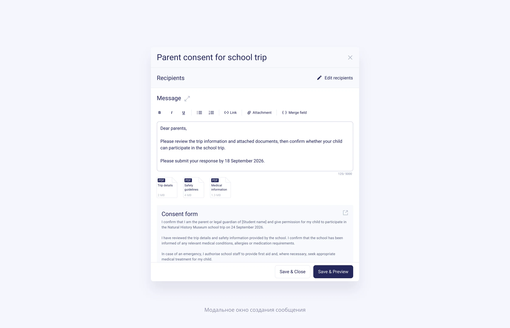
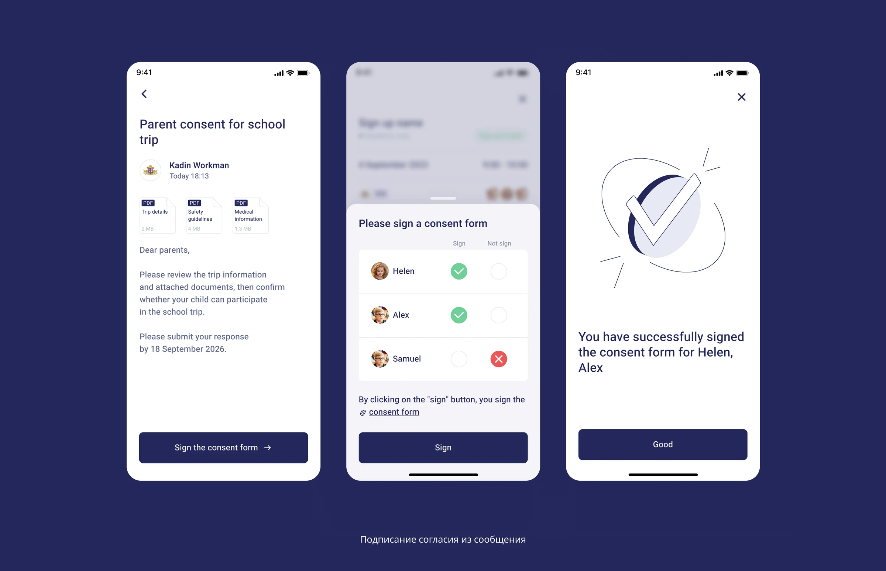
3. Цифровой сценарий для родителя
Родитель получает уведомление и может открыть запрос непосредственно в мобильном приложении.
Перед принятием решения он видит необходимую информацию о мероприятии, после чего может подтвердить согласие или отказаться.
Ответ сразу сохраняется в системе — не нужно распечатывать документ, передавать его через ребёнка или лично приходить в школу.
4. Единая статусная модель
Для формы определила состояния, которые позволяют обеим сторонам понимать, что происходит с запросом: отправлен ли он родителю, получен ли ответ и каким было решение.
Это позволило школе работать не с набором разрозненных документов, а со структурированными данными внутри Schooly.
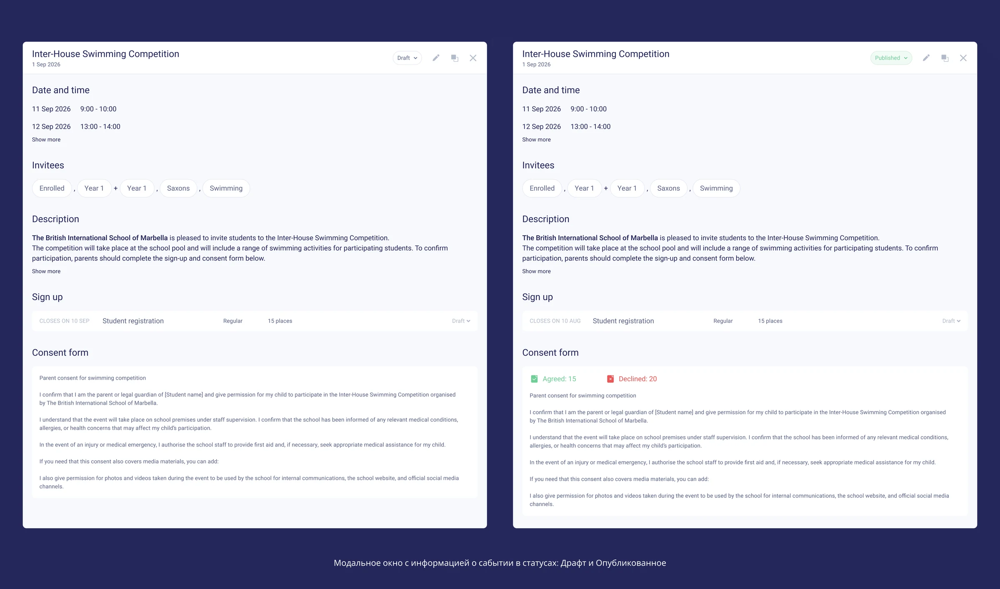
5. Автоматическая синхронизация участников
Ответ родителя влияет не только на состояние формы.
Если согласие получено, информация об участии ученика автоматически обновляется в связанном сценарии. При отказе Schooly также учитывает решение без необходимости вручную редактировать список участников.
Это убирает дополнительный административный шаг и снижает вероятность расхождения между ответами родителей и фактическим списком учеников.
6. Контроль результатов со стороны школы
Сотрудники могут видеть, какие родители уже ответили, а от кого согласие ещё не получено.
Вместо ручной проверки бумажных бланков школа получает актуальную картину непосредственно внутри рабочего интерфейса.
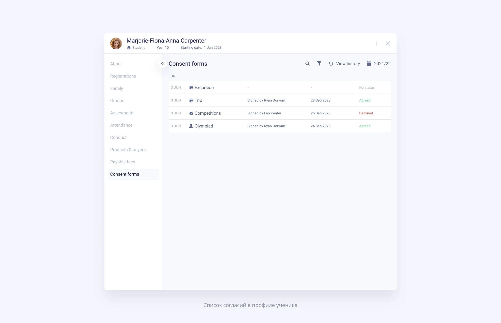
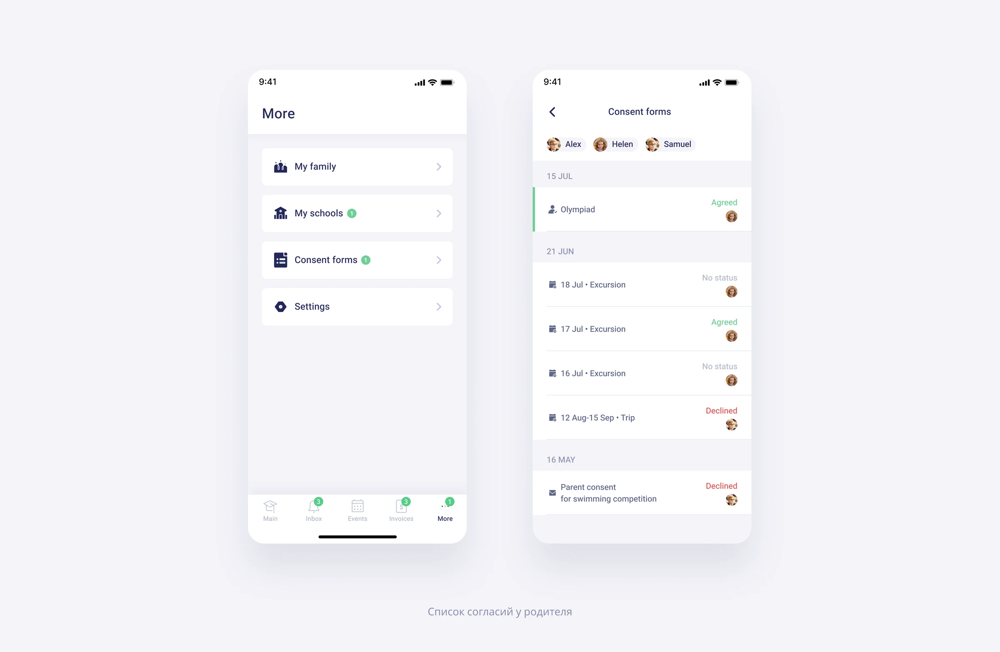
Приоритизация
На этапе проектирования начали с веб-части для сотрудников школы — это была самая сложная зона сценария: здесь нужно было создать запрос, определить получателей, связать согласие с конкретным учеником и мероприятием и отслеживать ответы.
При этом не создавали новые сущности без необходимости, а опирались на уже существующие в Schooly — учеников, группы, мероприятия и коммуникации. Это позволило сразу заложить связи между данными и встроить Consent Form в привычный рабочий процесс сотрудников.
После того как основная логика была собрана на стороне школы, перешли к сценарию родителя в мобильном приложении: получение запроса, просмотр контекста и документов, принятие решения и автоматическая передача результата обратно в систему. Так весь процесс проектировался как единая end-to-end цепочка, а не как два независимых интерфейса.
Проектирование сценария
Собрала единый User Flow для веб- и мобильного приложения и проработала сценарий не только по основному happy path, но и по состояниям вокруг него.
Со стороны школы рассмотрела создание Consent Form с нуля и добавление формы в уже существующие сущности Schooly — Event, Sign-up и Message, их связывание и отвязывание, редактирование, удаление, предпросмотр и работу с опубликованными и завершёнными событиями.
Со стороны родителя проработала получение запроса, просмотр связанного события и документов, согласие и отказ, изменение ранее выбранного ответа и отображение результата после отправки.
Отдельно продумала, как все эти действия синхронизируются между вебом и мобильным приложением: где хранится решение, как обновляются статусы, списки участников и данные связанного мероприятия, а также что происходит при изменении или удалении связанных сущностей.
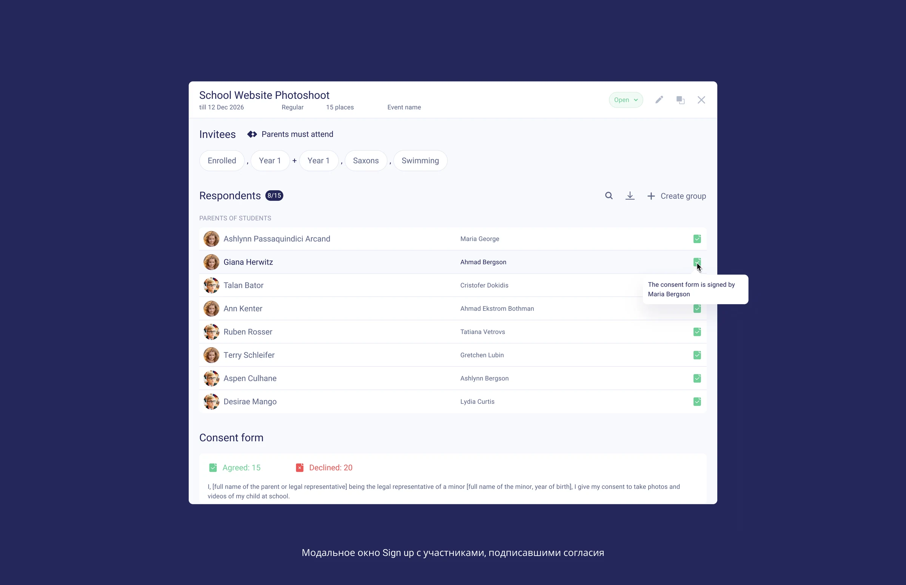
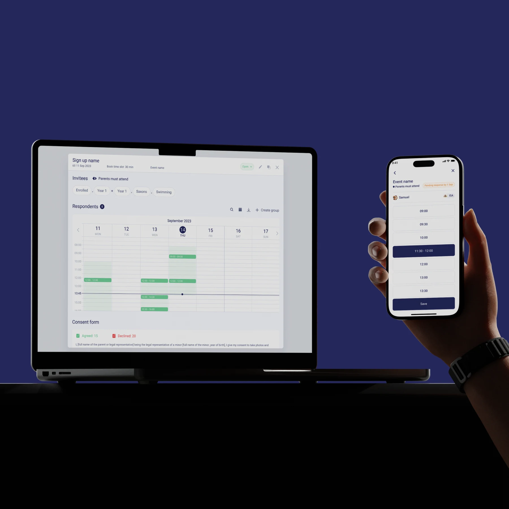
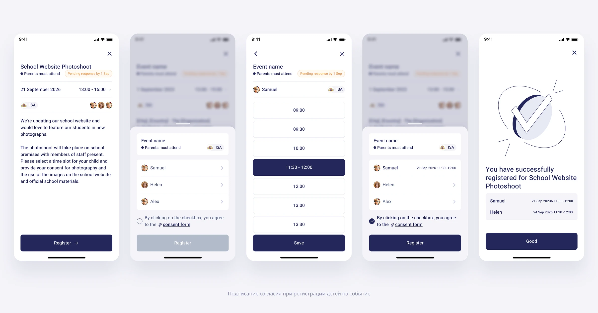
Прототипирование
После согласования продуктовой логики подготовила wireframes и Screen Flow. На low-fidelity уровне проверила последовательность действий, количество шагов, состояния формы и переходы между связанными разделами.
Прогоняла ключевые сценарии вместе с лид-дизайнером, разбирая спорные места, пограничные состояния и возможные тупики. Дополнительно провела коридорные исследования, чтобы проверить, насколько понятны формулировки, логика действий и последствия выбора без дополнительного объяснения.
Отдельное внимание уделила тому, чтобы родителю было понятно, какое решение он принимает, а сотруднику школы — какой статус сейчас имеет каждый запрос.
По результатам проверок скорректировала сценарии и только после этого перешла к финальным интерфейсам, подготовив все необходимые состояния для разработки.
Финальное решение
1. Школа запрашивает согласие внутри привычного сценария
Сотруднику не нужно создавать отдельный процесс вне Schooly.
Consent Form можно связать с Event, Sign-up или Message и отправить нужным родителям вместе с основной информацией о мероприятии.
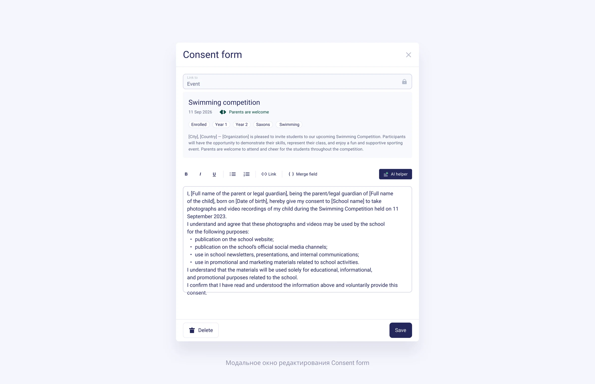
2. Родитель получает запрос непосредственно в приложении
Schooly уведомляет родителя о необходимости принять решение.
В мобильном приложении он видит информацию о мероприятии и может подтвердить участие ребёнка или отказаться — без бумажных документов и дополнительных коммуникаций со школой.
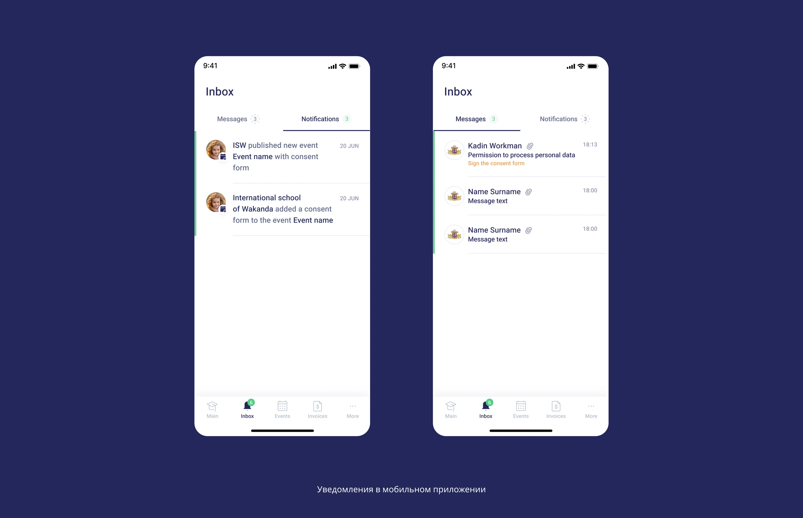
3. Ответ становится частью данных Schooly
После действия родителя система автоматически фиксирует результат.
Школа сразу видит актуальный статус формы и понимает, от кого согласие уже получено, кто отказался и от кого ещё ожидается ответ.
4. Не нужно вручную обновлять участников
Результат Consent Form синхронизируется со связанным сценарием.
Сотруднику не приходится отдельно переносить ответ родителя в другие части системы и вручную поддерживать актуальность списка участников.
Одно действие родителя обновляет информацию сразу для обеих сторон процесса.
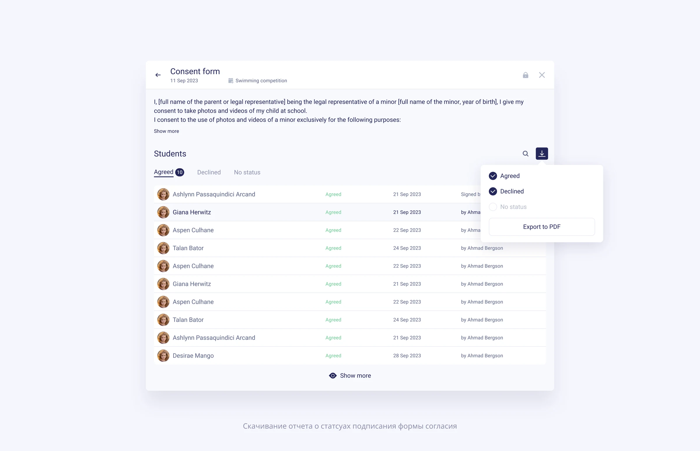
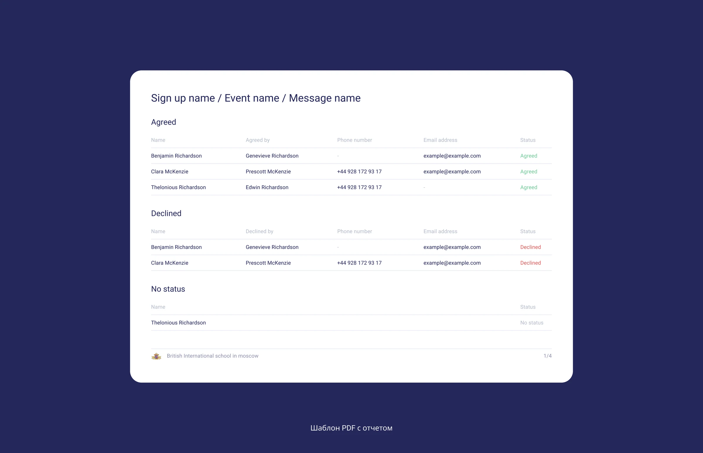
Передача в разработку
После согласования flow я описала Product Requirements Document в Confluence и Jira: зафиксировала бизнес-правила, состояния формы, пользовательские сценарии и требования к взаимодействию между сущностями.
Дополнительно оставила комментарии к спроектированным экранам и передала задачу разработке.
После реализации провела дизайн-ревью и зафиксировала расхождения между макетами и готовым интерфейсом.
Результат
В результате Consent Form стала не отдельной цифровой формой, а частью существующих процессов Schooly.
Школа создаёт запрос там же, где уже работает с мероприятиями и коммуникациями, родитель принимает решение непосредственно в мобильном приложении, а Schooly автоматически фиксирует ответ, обновляет статус и синхронизирует данные со связанным сценарием.
За счёт этого удалось убрать основные разрывы старого процесса: больше не нужно передавать документы через ребёнка, отдельно договариваться с родителями о встрече, вручную собирать бумажные формы и переносить полученные ответы в списки участников.
Для родителя путь сократился до получения запроса → просмотра контекста → принятия решения.
Для школы вместо набора бумажных документов появился управляемый процесс с актуальными статусами: сотрудник сразу видит, кто согласился, кто отказался и от кого ещё ожидается ответ.
Для продукта появился единый механизм согласий, который можно использовать в разных сценариях Schooly — Event, Sign-up и Messages — без создания отдельных решений под каждый из них.
Таким образом, решение закрывает исходную задачу на трёх уровнях: ускоряет получение ответа, сокращает ручную административную работу и снижает риск потери согласий или расхождения данных перед мероприятием.